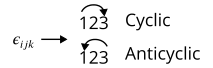

Tensor Calculus#
General relativity is written in the language of tensors and differential geometry, both known for their difficulty. This is hopefully a gentler guide to both topics, one that preserves the essense of their mathematical beauty without baffling the mind.
import sympy as sp
from sympy.plotting.plot import *
import matplotlib.pyplot as plt
import numpy as np
sp.init_printing()
Invariants#
The whole idea behind tensors is that we want to create mathematical objects that are the same in every coordinate system - we call that invariant. Why is this? The reason is because in the universe, objects are invariant. Intuitively, if you ask a friend to push you, whether you measure the force of your friend’s push in cylindrical or spherical or cartesian coordinates, you’re going to feel the same force. If you have, say, a magnetic force, that force is going to still exist and be the same physical quantity whichever coordinate system we use. The same goes for any other physical quantity, such as momentum, velocity, energy, etc. It makes sense that just using a different coordinate system to measure, say, a racecar, wouldn’t cause that racecar to be 20% faster or 15% slower - instead, the speed of the racecar would be the same. Mathematical objects that have the same physical quantity between differing coordinate systems are called tensors. Some tensors are scalars such as temperature; others are vectors such as position; still others are matrices; the commonality is that they correspond to one measurable physical object.
However, because we use coordinate systems to measure physical quantities, the components of a physical quantity may be dependent on the coordinate system we use, even though the physical quantity remains the same. For example, consider a vector \(\vec a\). This vector would have the following components in Cartesian coordinates:
And the following components in polar coordinates:
These represent the exact same vector, but the components are different. This is the motivation to find common transformation laws that help transform the the components of the same physical quantity - the same tensor - between differing coordinate systems. Thus, we can express the same physical object, say force, in one coordinate system or another, but the laws of physics that describe that physical object would be the same in any coordinate system.
Tensors and tensor notation#
A 3D vector in Cartesian coordinates can be written in terms of the basis vectors \((e_x, e_y, e_z)\):
Thus, we can write the sum more compactly as follows:
In Einstein summation notation, the summation is implied, so we can more simply write our vector as:
When writing vectors as tensors, it’s customary to put the indices on top (as superscripts) instead of on the bottom (subscripts). Note that these are not raising to a power. So we now have:
Given two vectors \(\vec A\) and \(\vec J\), we can now write the inner product more succintly as:
And we can define other vector field operations, such as the gradient, using the same notation:
Note
Remember that when writing tensors, the letters we use for the summed-over index are arbritary. We use \(i\) because that’s how we write summation most often, but we could use any letter we want. Later one, we’ll use greek letters when denoting tensors in spacetime, but that’s just a convention, not an absolute rule.
Contravariant tensors, usually just called vectors, are most generally written with Einstein summation convention. We denote their components with \(V_i\) and their basis with \(e_i\), so:
Covariant tensors, usually just called covectors, are also written using the convention. They are marked by a tilde over the letter, and are denoted (in terms of their basis \(e^i\)) as:
Covectors in the 2D and 3D case can be thought of as row vectors that are multiplied by column vectors to give the dot product:
Note on generalization
In the more general \(N\) dimensional case, covectors are what you multiply by a vector to obtain a scalar using the dot product. They don’t have to be row vectors.
Tensors that are not scalars, covectors, or vectors are formed by multiplying one or more vectors with covectors using the rules of the tensor product (which we’ll see next) and tensor algebra.
Rules of Tensor Algebra#
Scalar multiplication rule:
Addition/subtraction rule:
Multiplication rule (which raises the rank of a tensor) - also called tensor product:
Contraction rule (which lowers the rank of a tensor) by multiplying with another tensor with an identical index in the opposite position:
The other tensor to be multiplied by is often going to be the metric tensor - more on that later.
The contraction rule also applies when a tensor has identical upper and lower indices:
Tensors can also obey several crucial symmetries. A symmetric tensor is one in the form:
Whereas an antisymmetric tensor is in the form:
The double contraction of a symmetric tensor \(S^{\alpha \beta}\) and antisymmetric tensor \(A_{\alpha \beta}\) is zero:
Basis vectors and basis covectors obey the relation:
Where \({\delta^i}_j\) (called the Kronecker delta) is defined as:
For example, the 3D version of the Kronecker delta is given by:
You might recognize this as the identity matrix, and the special property of the identity matrix is that it returns the original vector when multiplied by any vector.
If we take two basis vectors in Cartesian space and take their dot product, the result is Kronecker delta:
The Kronecker delta is the Cartesian form of the more general metric tensor, which is when we take the dot product of two non-Cartesian basis vectors:
Given a covector \(\tilde A\) and a vector \(\vec B\), we find that we end up with a scalar using tensor notation :
Let’s examine this equation in detail to familiarize ourselves with tensor algebra. First, we wrote out our vector and covector in terms of their components and basis:
We then used the Kronecker delta to rewrite the dot product of the basis vectors as the Kronecker delta:
Now, we used the Kronecker delta to relabel the indices of the components of our vector and covector:
Finally, we used tensor contraction due to the same index on the upper and lower indices to contract the components to scalars:
We can also write the cross product using tensors. To do this, we introduce the Levi-Civita symbol:
A cyclic permutation is if the indices go in order from left to right, such as 123, 231, or 312. An anticyclic permutation is if the indices go in order from right to left, such as 321, 213, or 132. Indices repeat in any case like 122 or 233:
{kind=link}
With this defined, we can express the cross product as:
Or if we insist on producing a vector rather than a covector, though the result is identical:
Coordinate transformations#
To understand tensor transformations, let’s consider the case of transforming a vector \(\vec V\) between \((x, y)\) and \((r, \theta)\) coordinates.
The crux of the problem is that we have two definitions of \(\vec V\):
What we need is a reliable way to express \(e_x\) in terms of \(r\), and \(e_y\) in terms of \(\theta\).
At first glance, there is not much we can do. However, we know that the components of a vector are linearly independent - that is, do not affect each other. This means we can say that:
Let’s focus on the first equation first. We can replace \(v^x\) with just a function \(x\), as \(v^x\) is really just a displacement in the \(x\) direction. We can similarly replace \(v^r\) with a function \(r\), as \(v^r\) is just a displacement in the \(r\) direction:
Given that this first equation holds true, then the same should be true in terms of the differentials of the components:
Now, if we divide by \(dx\) on both sides of the equation, we have:
Using the same process for the second equation, we get a similar result for \(e_y\):
Now, plugging in this to our original expression for our vector:
We have:
But we also know that:
Equating this equation and the previous, we have:
Using index notation, we can write this (with \(i' = r, \theta\) and \(i = x, y\)):
Note
Remember the summation is implied, which is how we were able to shrink the two terms on the left hand side and the right hand side to just one term on either side.
We notice that the \(e_{i'}\) term appears on both sides of the equation, so we can cancel them out to have:
Finally, note that technically, \(x^{i'}\) is a multivariable function, so:
We have derived the vector transformation law. A similar derivation, just with oppositely-placed indices, is true for covectors.
Tensor transformation law#
What’s most interesting about tensors is how they are defined, because they are defined in terms of how they transform. For instance, let’s go through the formal definitions of contravariant and covariant tensors. They are defined like so:
Vectors (contravariant tensors) transform by the following transformation law from coordinate system \(x^i\) to \(x^{i'}\):
While this definition is already workable, mathematicians more abstractly define contravariant tensors in a slightly different fashion: as the tangent vector to a parametrized curve in spacetime. The parameter used is most commonly \(\tau\), the proper time. So:
Note
Remember: We are using the convention \((x^0, x^1, x^2, x^3) = (t, x, y, z)\)
Covectors (covariant tensors) transform instead by the following transformation law:
Again, we can also define covariant tensors with an alternate method. Consider a function \(f(x^i)\), where again \(x^i = (x^0, x^1, x^2, x^3) = (t, x, y, z)\). Its gradient would be given by:
The components of the gradient, given by \(\frac{\partial f}{\partial x^i}\), are the components of a covariant tensor.
So now, having seen how covariant tensors and contravariant tensors transform, we can more generally describe what a tensor is:
Definition of a tensor
A mathematical object represented by a collection of components that transform according to certain transformation laws.
The type \((m, n)\) of a tensor is given by how many upper indices (\(m\)) it has, and how many lower indices (\(n\)) it has. The total number of upper and lower indices is its rank.
Now, let’s look through several typical tensors:
First, we have scalars, which are \((0, 0)\) or rank-0 tensors.
Then, we have vectors and covectors, both rank-1, which are respectively \((1, 0)\) and \((0, 1)\) tensors. We usually write vectors like this:
And we usually write covectors like this:
Multiplying a vector and a covector is taking their tensor product, which gives a rank-2 tensor, also called a matrix:
The tensor product is the primary way we construct new tensors in tensor calculus (which we’ll use in differential geometry). Any two tensors can be multiplied through the tensor product, so we can use the tensor product to construct any tensor. Most importantly, because the tensor transformation rule is preserved every time we take the tensor product, we can now use it to define any tensor. This is the most general definition of a tensor:
This horribly long and scary-looking equation is what gives tensors their reputation for frying minds, but, reassuringly, you almost never need to use this definition in practice. However, the definition is really just a formalized version of a simple idea: a tensor is a combination of vector and covector transformations that preserve the tensor transformation law. We therefore arrive at the common but unhelpful observation that:
“A tensor is anything that transforms like a tensor.”
Practical application: Newton’s laws in Tensor Calculus#
To rewrite Newton’s laws of motion in tensor calculus is not difficult. For example, we can take \(\vec F = m \vec a\) and rewrite with tensors as:
We can rewrite \(a^i\) as:
Allowing us to write Newton’s second law as:
In practice, however, this is only true in Cartesian coordinates. To generalize to any set of curvilinear coordinates, the actual correct formula is:
Where \(\Gamma^i_{\mu \nu}\) is a quantity that depends on the metric \(g_{\mu \nu}\) of the space (more about this next chapter).
Our new form of Newton’s (2nd) law is now valid in all coordinate systems. Obviously, though, no one writes Newton’s laws in this way; this is just a demonstration. Instead, let’s look at a more practical example.
Practical application 2: Maxwell’s equations in tensor calculus#
When using tensor calculus to express Maxwell’s equations, the advantages of tensors becomes much more clear. But first, let’s take a look at Maxwell’s typical laws (these are expressed in SI units):
We can define a quantity \(\vec A\) called the vector potential, where:
And a quantity called \(\phi\) called the scalar potential, where:
This allows us to simplify Maxwell’s 4 equations to just 2:
We can then define an electromagnetic tensor \(F_{ij}\) like this:
Now, using the electromagnetic field tensor, we can rewrite Maxwell’s equation using just 2 tensor equations, which, like any tensor equation, is coordinate-independent:
Differential geometry in GR#
Studying differential geometry as it applies to General Relativity starts with the basic Pythagorean theorem. The distance between any 2 points in a 2D space can be found with the theorem:

Thus, we can say that:
We call this the line element of the space, which tells us how distances between two points are measured.
The line element of 3D space is very similar to the 2D case - just add an additional coordinate:
However, in 4D spacetime, things are a bit different. In flat spacetime, also called Minkowski spacetime, the line element is given by:
This is equal to the inner product of the infinitesimal displacement vectors of Euclidean space multiplied by a matrix:
This matrix is called the metric tensor - we’ve seen this before, it generalizes the dot product to spaces where the basis vectors aren’t constant. Why the need for a metric tensor? Imagine we had two vectors, \(x^\mu\) and \(x^\nu\). Their product would be given by:
This is why we need a metric tensor. Note that, as we saw before, the metric tensor is a rank-2 tensor, as it is the tensor product of two rank-1 vectors (which are contravariant tensors).
Also note that we often use the metric tensor for raising or lowering indices via tensor contraction. Thus:
And if we multiply the metric tensor by its inverse, we get the identity matrix, equal to the Kronecker delta, which yields a scalar:
Finally, we can convert line elements between different coordinate systems. A more tensor-based system for doing so will be given the next chapter, but as just an example, let’s attempt to convert the 3D line element to spherical coordinates.
In spherical coordinates, \((r, \theta, \phi)\), we recall that spherical coordinates are defined in terms of cartesian coordinates as follows:
Thus, after evaluating the differentials using the total differential rule, we find that:
After an ungodly long process of adding in our evaluated values for the squares of the three differentials \(dx\), \(dy\), and \(dz\), we finally get the line element in spherical coordinates:
Therefore, our metric tensor becomes:
Which still satisfies:
After doing all of these calculations with tensors, why do we need to use them at all? It’s because tensor equations take the same form in any coordinate system. This important fact will be crucial in working on a theory of general relativity.